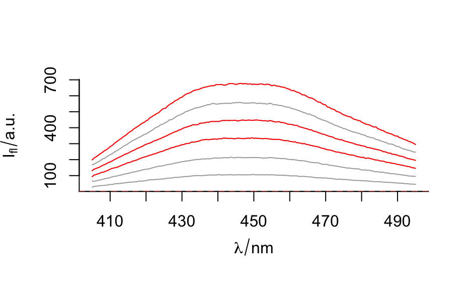
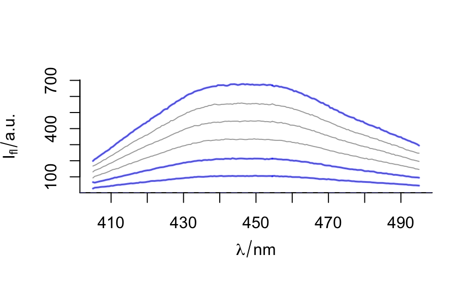

Take a sample of the specified size from the elements of x with or without replacement.
# S4 method for hyperSpec sample(x, size, replace = FALSE, prob = NULL) isample(x, size = nrow(x), replace = FALSE, prob = NULL) # S4 method for data.frame sample(x, size, replace = FALSE, prob = NULL, drop = FALSE) # S4 method for matrix sample(x, size, replace = FALSE, prob = NULL, drop = FALSE)
| x | The hyperSpec object, data.frame or matrix to sample fromto sample from |
|---|---|
| size | positive integer giving the number of spectra (rows) to choose. |
| replace | Should sampling be with replacement? |
| prob | A vector of probability weights for obtaining the elements of the vector being sampled. |
| drop | see |
a hyperSpec object, data.frame or matrix with size rows for
sample, and an integer vector for isample that is suitable for
indexing (into the spectra) of x.
vector with indices suitable for row-indexing x
C. Beleites
#> hyperSpec object #> 3 spectra #> 3 data columns #> 181 data points / spectrumisample(flu, 3)#> [1] 2 4 1isample(flu, 3, replace = TRUE)#> [1] 1 5 1isample(flu, 8, replace = TRUE)#> [1] 5 3 5 4 5 1 5 6#> speed dist #> 24 15 20 #> 46 24 70#> [,1] [,2] [,3] [,4] #> [1,] 4 10 16 22 #> [2,] 3 9 15 21